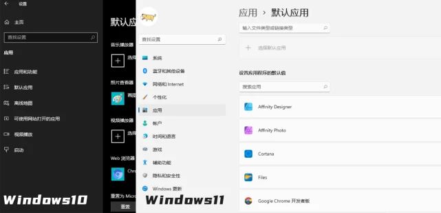
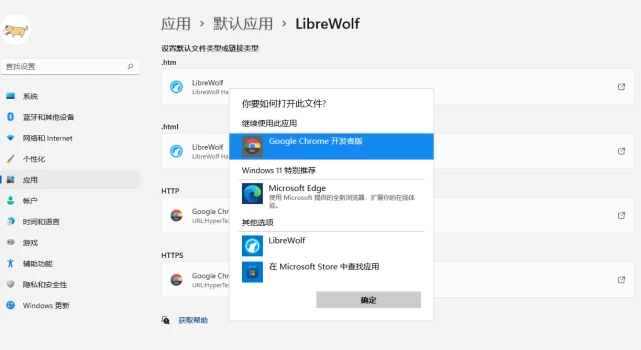
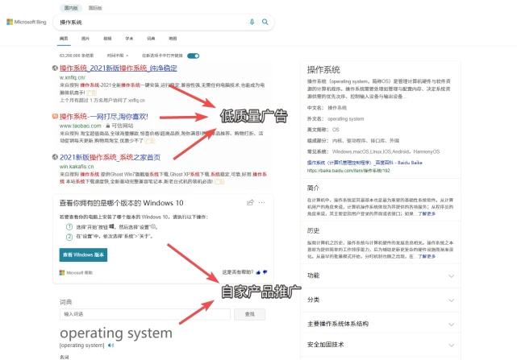
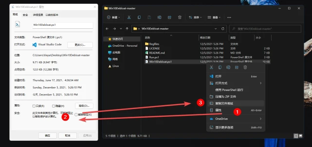
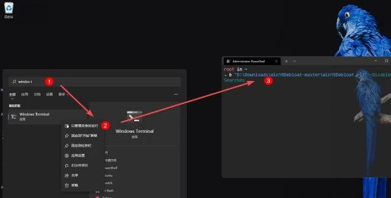
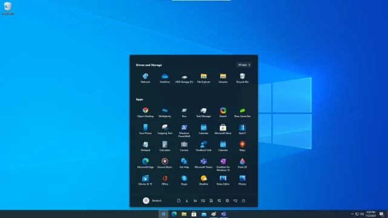

玩转Windows
写在前面📜
Windows 11 带来了全新的视觉、听觉体验和不少令人耳目一新的功能。不出所料的是，这些更新还搀杂了各种全新的 Bug 和特性。当然这似乎是一种潮流：几家科技巨头都热衷于在发布会和宣传片上炫耀新功能，却留下各类恼人的 Bug 或「特性」供开发人员修复到猴年马月。更何况 Windows 只占微软整体收入一小部分，市场中又没有任何产品足以与之竞争，指望微软官方短时间内有动力提供更好的系统体验太过不切实际。
不过使用 Windows 时的遇到诸多不顺自有应对之道。如果你苦恼于莫名宕机的开始菜单，存在感极强但作用不大的 Teams 和小组件，亦或者愤满于微软高筑的软件迁移门槛，那么下面的这些技巧或许能帮助到你。部分技巧同样适用于 Windows 10。
GO！
通过文件和链接类型更换默认浏览器
是的，更换默认浏览器竟然再次成为了需要拿出来说的东西。
如果你是从 Windows 10 升级到 Windows 11，那么你的浏览器设置将会被保留。而如果你的 Windows 11 为全新安装，现在想从 Edge 切换到其他的浏览器，在目前（22000.348）版本中，你会发现原来的「默认程序」界面不再提供切换默认浏览器功能。这显然是为了提高用户从 Edge 迁出的门槛。

现版本如果想要切换某浏览器为默认，需要更多的步骤。假设我们想要将Liberwolf设定为默认浏览器，需打开设置面板，进入 ，将 .html、.htm、HTTP 和 HTTPS 四个条目设置为 Liberwolf。

微软的这种举动倒逼部分厂商做出回应。从官网下载的 Firefox 用户目前可直接的浏览器设置中将 Firefox 设置为默认。Windows 应用商店中 Firefox 则无此功能。
更换或者禁用开始菜单的 Bing 搜索
Windows 11 上的本地检索更好用了，但 Bing 没有。
Bing 是开始菜单中的网页搜索引擎，它在中文搜索结果的准确性上并不合格，在推广微软 产品、投放广告以及收集用户数据方面到很有一手。最重要的是，很多情况下 Bing 是开始菜单失去响应、白屏等问题的罪魁祸首。

如果你愿意通过 Windows 开始菜单搜索网页的话，可以从浏览器入手重定向 Bing 搜索结果。
如果你想彻底告别开始菜单中的 Bing，那么可以通过一个小脚本来实现。
通过 下载 GitHub 上的Win10Debloat项目，解压至任意文件夹。右键其中的 ，选择 ，并在弹出的面板中选择 以保证脚本能够正确运行。再右键复制其文件地址，我们会得到类似 的路径。

看来即将 2224 年了，微软还是没有实现全局的深色模式
之后，以管理员权限打开 Windows Terminal（PowerShell 亦可），先键入 以获得执行本地脚本的权限。再粘贴刚刚得到的路径，在路径前输入，在后面加上。最终的命令类似 。回车键确认执行。重启电脑，Bing 就会被禁用。

开始享受没有在线搜索结果的清爽检索体验吧！
全面自定义 Windows 开始菜单和任务栏
用户的喜好总是很难把握，Windows 8 时代无数人称无法适应的全屏高对比度单色磁贴到了 Windows 10 时代开始被人怀念；Windows 10 时代被贬称为缝合怪的应用列表到如今也有人开始喜欢。不过 Windows 11 的开始菜单给用户的自由调整空间确实远不及从前。
想要体验不同的风格的开始菜单自然不用退回 Windows 10，Fences 的开发商Stardock最近更新的开始菜单自定义工具 Start11 是一个更好的选择。
调整风格：Windows 7/8/10/11 风格任选；
位置：可以调整任务栏的位置，Windows 11 风格的任务栏亦可以调整；
为 Windows 11 风格的菜单添加自定义壁纸；
可以禁用 Bing 搜索；
固定更多的应用：如果你不喜欢 Windows 11 默认的「推荐的项目」，此软件可以将这部分空间固定更多的应用。

结语
总体来说，Windows 中一部分第一方应用体验确实不错，其大力推广的 Edge 浏览器也足够优秀。但另一方面，Windows 11 自正式发布以来糗事不断，它和微软的其他产品集成地愈加紧密，OneDrive 最近还给微软引来反垄断的官司。微软能不能用更好的产品力安抚用户？其行为对市场的健康发展是积极的吗？个人持怀疑态度。
当然，目前的 Windows 仍然为用户提供了足够的自由度，某个功能特性不喜欢，用户还能自由调整，只是更加麻烦了而已。